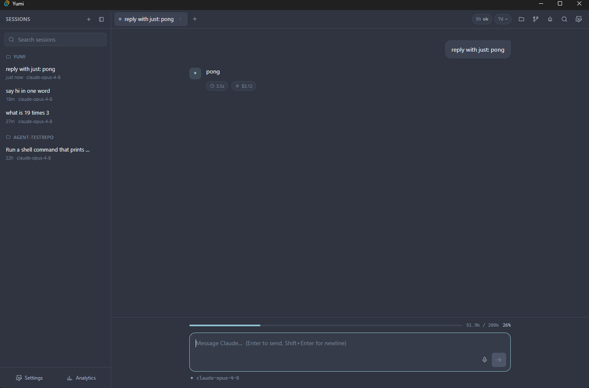

Reliability & Design¶
The non-obvious bugs that were root-caused, the fixes that resolved them, and the design decisions that fall out of them.
Yumi spawns a real, full-featured CLI as a child process, which makes it subject to a class of subtle failures around environment inheritance, process lifetime, and hook timing. Five of these were root-caused and fixed; the fixes are load-bearing and explain a lot of the backend's shape.
1. Environment-leak hang → env sanitization¶
Symptom. Launching Yumi from inside a Claude Code session caused multi-minute
hangs and zombie claude processes.
Cause. The spawned claude inherited the parent session's environment —
CLAUDE_CODE_SESSION_ID / CLAUDECODE / ANTHROPIC_BASE_URL / CLAUDE_STREAM* —
causing session-id collision and proxy nesting.
Fix. claude/spawner.rs strips every CLAUDE_CODE_*, CLAUDECODE,
ANTHROPIC_BASE_URL, and CLAUDE_STREAM* variable before spawn, so every child is
a clean top-level session. The background-agent spawner (agents.rs) does the same.
Harmless when launching Yumi normally, robust regardless.
2. Thinking proxy could wedge the chat → probe-before-use¶
Symptom. A failed thinking proxy hung the whole chat forever.
Cause. The launcher returned the proxy URL as soon as node started, not when
it was listening. A proxy that crashed (port race, bad path) left claude pointed
at a dead ANTHROPIC_BASE_URL.
Fix. claude/proxy.rs now TCP-probes that the proxy is accepting
connections (up to a 3 s budget) before returning its URL. If unconfirmed it returns
None, and the spawner lets claude talk to the real API directly — so thinking
display works when the proxy comes up and the core chat is never blocked when it
doesn't. The script is resolved via claude::resources::resolve_resource, which
checks app.path().resource_dir() first (correct in a production bundle) and falls
back to the dev-layout ancestor-walk; a failed attempt is cached so it isn't
retried. Once confirmed listening, the proxy PID is registered with guard::track
so it dies with the host on panic or exit. See Thinking Proxy.
3. Slow finalization → finalize on end_turn, not result¶
Symptom. The Stop button stayed "Stop" for ~47 s after the answer was already on screen.
Cause. The spawned claude -p runs the user's post-turn Stop hooks before
emitting the final result line. In a heavy-hook environment those hooks delay
result by 30–60 s.
Fix. Yumi finalizes the turn (flips Stop → Send, re-enables input) on the
message_delta stop_reason: "end_turn" signal — surfaced as the turn_done event
— which arrives as soon as the answer completes (~10 s, verified). A tool_use /
pause_turn stop reason is not terminal, so multi-step tool turns are
unaffected.
The subtlety is what happens after finalize: the backend keeps draining the lingering process's stdout silently (so its pipe never blocks and its hooks complete), but stops emitting events. To make sure a lingering turn's late output can't corrupt a newer turn that reused the same session id, the registry uses a pid-aware pair:
is_current(sid, pid)— gates any late emit on "is this still the registered process?"unregister_if(sid, pid)— only unregisters if the stored PID still matches.
See Stream Pipeline for the turn_done mechanics and
Backend (Rust) for the registry.
4. Accurate analytics & cost without sacrificing responsiveness¶
Tension. The result line carries the turn's real cost + token totals, but it
arrives late (after the hook-delayed finalize), and the backend has stopped emitting
by then. Waiting for it would re-introduce the ~47 s lag; dropping it would lose the
data.
Fix. The backend parses the drained result itself:
- it records an analytics row (db.record_analytics) for the dashboard, and
- if the turn was already finalized, it emits a lightweight claude-cost side-channel event so the per-message footer can show ⏱ duration + ⚡ cost.
The claude-cost emission is pid-gated (registry.is_current) so it can never
attach to a newer turn that reused the session id. Net: the dashboard and the cost
footer are populated accurately, and the chat stays as responsive as before. (Cost
is shown live but not persisted — the messages schema has no cost column.)

claude-cost side channel attaches the ⏱ 3.5s · ⚡ $0.12 footer.5. Orphaned children on host panic → process::guard¶
Symptom. A Rust panic in the host process left spawned claude children
(and the thinking-proxy node process) running indefinitely — invisible to the
user and unable to be interrupted.
Cause. The existing process registry tree-kills children on clean teardown
(stop/interrupt/RunEvent::Exit), but a std::panic unwinds past the registry
logic without firing those handlers.
Fix. process/guard.rs maintains a process-wide set of child PIDs. A panic
hook installed at startup (guard::install_panic_hook) calls guard::kill_all()
before the previous hook runs, ensuring the whole set is tree-killed even on an
abnormal exit. The Tauri RunEvent::Exit handler also calls kill_all for
normal teardown. Both spawned claude turns (via spawner.rs) and the
thinking-proxy (via proxy.rs) register their PIDs with guard::track(pid);
clean exits call guard::untrack(pid) so the set only holds live processes.
Other design decisions¶
[lib] crate-type = ["rlib"]— enables thewindows-gnubuild with no MSVC. See Build, Run & Test.- Non-lossy parser.
stream_parser.rsnever silently drops a line; anything unknown becomes arawevent. This keeps the clone resilient tostream-jsonshape drift in future CLI versions. - Spawn is non-bare. The full
--output-format stream-json --verbose --include-partial-messages --dangerously-skip-permissionsform is used deliberately; a bare spawn breaks auth in this environment. - Provider routing, not binary shims.
provider.rsdrives every provider through the sameclaudebinary; non-Claude providers injectANTHROPIC_BASE_URL = routerBaseUrlinstead of locating a foreign CLI. A non-Claude provider with no router URL configured returns a clearErr— never a fake path. See Features & Shortcuts. - DB pruning for long-lived installs.
Db::prune(max_sessions, max_analytics_age_ms, now_ms)runs at startup; it caps stored sessions to the 500 most-recently-updated (cascading their messages) and drops analytics rows older than 1 year, bounding unbounded growth without silent data loss. - Worktree isolation for agents. Background agents run in throwaway git worktrees so a headless turn can never disturb the working tree; the change only lands on an explicit Merge.
- Intentional omissions. Licensing/payments/auto-update/VSCode-companion are deliberately not cloned (see Overview); the parity matrix labels them ⬜ so nothing is overclaimed downstream.
See also¶
- Architecture — where these fixes sit in the data flow.
- Backend (Rust) —
spawner.rs,proxy.rs,process/registry.rs,process/guard.rs. - Troubleshooting — symptoms mapped to these causes.
yumi/PARITY.md— the "Reliability notes" section (authoritative).